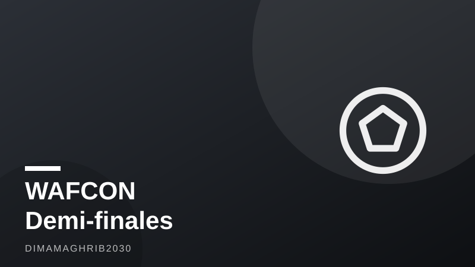

CAN féminine 2026 : demi-finales le 12 août à Rabat, un ticket direct pour le Mondial 2027 en jeuWAFCON 2026 Semifinals Set for August 12 in Rabat — With a Direct Ticket to the 2027 World Cup on the Line

La CAN féminine 2026 entre dans sa semaine décisive. Après trois semaines de compétition disputées entre Rabat et Casablanca depuis le 26 juillet, le tournoi — première édition à seize équipes de l'histoire de la compétition, selon Olympics.com — atteint son tournant le plus attendu : les demi-finales, programmées mercredi 12 août à Rabat, avant une finale fixée au 16 août. Au-delà du trophée continental, c'est un enjeu bien plus concret qui se joue désormais sur les pelouses marocaines.
Un ticket pour le Brésil, l'enjeu ultime
Selon Olympics.com, les quatre équipes qui se qualifieront pour les demi-finales du 12 août obtiendront chacune une place directe pour la Coupe du monde féminine 2027 au Brésil. C'est cette perspective qui transforme chaque match du tournoi en confrontation à très haute tension : la qualification pour le Mondial 2027 ne dépendra plus d'un classement final, mais du simple fait d'atteindre le dernier carré. Les deux rencontres du 12 août se joueront à 19h00 et 22h00 dans la capitale marocaine, avant que le vainqueur du tournoi ne soit connu quatre jours plus tard, le 16 août, toujours selon Olympics.com. Entre les deux dates, une semaine à haut risque s'annonce pour les huit meilleures sélections du continent.
Les Lionnes de l'Atlas, invaincues et portées par leur public
Le pays hôte aborde ce tournant en position de force. Le Maroc a bouclé la phase de groupes invaincu, terminant en tête du Groupe A avec six points en deux victoires, complétées par un match nul 0-0 face au Sénégal le 3 août au stade Prince Moulay Abdellah de Rabat, rapporte AllAfrica. Pour les Lionnes de l'Atlas, ce résultat confirme une dynamique solide construite tout au long de la compétition, portée par un public acquis à leur cause dans une enceinte devenue, semaine après semaine, le véritable épicentre du football féminin marocain. Jouer les demi-finales à domicile, dans ce même stade qui a vu grandir leur parcours, constitue un avantage psychologique que peu de sélections africaines peuvent revendiquer à ce stade d'une compétition continentale.
Groupe C : rebondissements à Casablanca
Si le Maroc a maîtrisé son groupe, l'autre versant du tableau a offert son lot de surprises. À Casablanca, le Nigeria a dominé la Zambie 1-0 le 1er août, avant que le Malawi ne crée la sensation en battant l'Égypte 3-1 le lendemain, selon Senego. Ces résultats ont totalement rebattu les cartes de la qualification, obligeant plusieurs sélections traditionnellement favorites à recalculer leurs chances jusqu'à la dernière journée. Ce scénario illustre l'imprévisibilité grandissante de la CAN féminine, où les hiérarchies établies ne garantissent plus rien face à des équipes en pleine progression.
À l'approche des demi-finales du 12 août, l'attention du continent se tourne désormais entièrement vers Rabat. Entre les Lionnes de l'Atlas portées par leur public, les prétendants du Groupe C encore incertains jusqu'au bout, et la promesse d'une place directe pour le Mondial 2027, cette semaine s'annonce comme l'une des plus intenses de l'histoire récente du football féminin africain. Rendez-vous est pris pour la finale du 16 août, qui couronnera non seulement une championne continentale, mais aussi la dernière des quatre nations désormais assurées de disputer la Coupe du monde au Brésil.
The Africa Women Cup of Nations is heading into its most consequential stretch. Since kicking off on July 26 across Rabat and Casablanca, WAFCON 2026 — the first edition of the tournament to feature 16 teams, according to Olympics.com — has built toward a pivotal week: semifinals on Wednesday, August 12, in Rabat, followed by the final on August 16. What makes this stage different from any previous edition is what's riding on it beyond the trophy itself.
A Direct Ticket to Brazil, Not Just a Trophy
Olympics.com confirms that each of the four teams reaching the August 12 semifinals will secure direct qualification for the 2027 Women's World Cup in Brazil. That single fact has raised the stakes of every match remaining in the tournament — qualification for the sport's biggest stage no longer hinges on a final ranking, but simply on surviving to the final four. The two semifinal matches are scheduled for 19h00 and 22h00 local time in the Moroccan capital, with the champion to be crowned four days later, on August 16, per Olympics.com. In between, eight of the continent's best national teams enter a week where a single result can define years of planning.
Morocco's Atlas Lionesses Enter Unbeaten, Backed by Home Crowds
The host nation arrives at this stage in commanding form. Morocco finished group play unbeaten, topping Group A with six points from two wins, capped by a 0-0 draw against Senegal on August 3 at Prince Moulay Abdellah Stadium in Rabat, according to AllAfrica. For the Atlas Lionesses, that result underlines a steady campaign built on both tactical discipline and the energy of home crowds who have turned the stadium into the beating heart of Morocco women's football throughout the tournament. Playing the semifinals on the same ground where their run has taken shape gives Morocco a psychological edge few continental rivals can claim at this stage of the competition.
Group C Chaos Adds an Extra Layer of Drama
While Morocco cruised through its group, the other side of the bracket delivered plenty of upsets. In Casablanca, Nigeria beat Zambia 1-0 on August 1, before Malawi stunned Egypt 3-1 the following day, according to Senego. Those results scrambled the qualification math for several traditionally dominant sides, forcing recalculations that went down to the final matchday. It's a reminder that the established hierarchy in African women's football is no longer a given, with emerging teams increasingly capable of derailing the favorites.
As the tournament shifts its full attention to Rabat football féminin ahead of August 12, the storylines are stacking up fast: a home nation unbeaten and full of belief, a wide-open Group C picture, and four World Cup berths waiting to be claimed. Whichever teams reach the semifinals will already have punched their ticket to Brazil 2027 — turning this week into one of the most consequential in the recent history of the women's game on the continent, with the August 16 final set to crown not just a champion, but the last of the tournament's four World Cup-bound nations.